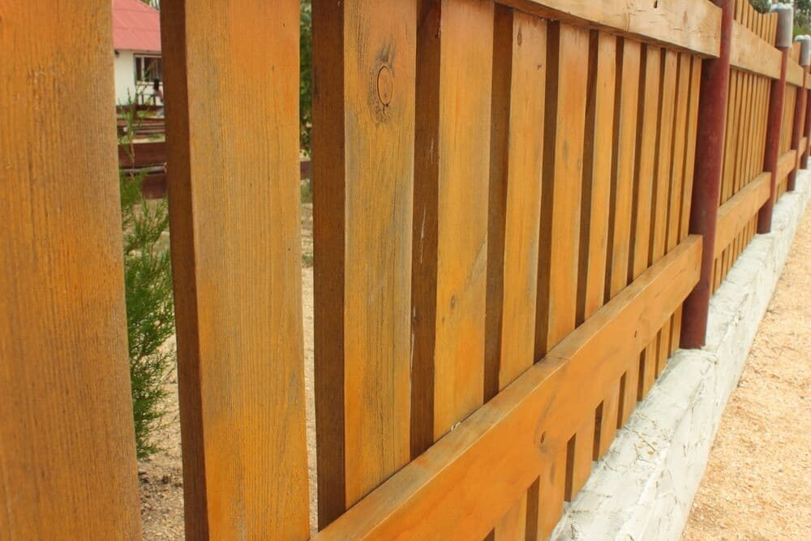

In This Guide
- Fence sealers split into water-based and oil-based formulas, and each one trades drying speed and cleanup against depth of protection.
- How much color a product carries, from clear to solid, changes both the look and how long it shields the wood from sun.
- Louisiana humidity puts mildew resistance and water repellency at the top of your checklist.
- Read the label for UV blockers, mildewcide, recoat timing, and coverage before you buy.
Walk down the stain and sealer aisle and every can promises to protect your fence. They do not all protect it the same way. Some are built to keep water out, some to block the sun, and some to fight mildew, and few do all three equally well.
This guide from Big Easy Fence sorts the choices by type instead of by brand, so you can decide what your fence needs before you compare labels on the shelf.
What a Fence Sealer Actually Does
A good sealer on a wood fence does three jobs at once. It keeps liquid water from soaking in, which slows rot, warping, and mildew. It blocks ultraviolet light, which fades the wood and turns it gray. And it helps the surface shed dirt so the fence stays cleaner between washes.
No sealer does this forever. Sun and rain wear the coating down, and the wood underneath needs a fresh layer sooner or later. The type you pick decides how deep the protection goes and how soon you will be back with a brush.
The Two Main Sealer Families
Water-Based Sealers
Water-based formulas dry quickly, clean up with soap and water, and usually have lower fumes. They tend to sit closer to the surface of the wood than oil formulas do. Many owners like them for ease of use and for a lighter smell while the fence dries.
Oil-Based Sealers
Oil-based products soak deeper into the wood. That deeper penetration can mean longer protection, and it is a common choice for older or dry boards that drink up finish. The trade-off is a longer drying time and more careful cleanup.
Low-VOC and Eco-Friendly Formulas
Both families now come in low-VOC versions, which release fewer fumes as they cure. If you have kids, pets, or a garden right along the fence, look for a low-VOC label and read what the manufacturer says about plants and runoff.

Clear, Tinted, or Solid: How Much Color?
Separate from the water-versus-oil question is how much pigment the product carries. Pigment blocks sunlight, so more color usually means more sun protection and less of the natural grain showing through.
| Finish | Look | Sun Protection | Best For |
|---|---|---|---|
| Clear Sealer | Shows the natural wood | Low | New wood in shaded spots |
| Semi-Transparent Stain | Grain shows through with a tint | Moderate | A natural look with real protection |
| Semi-Solid Stain | Rich color, some grain visible | High | Fences in full sun |
| Solid Stain | Opaque color, like paint | Highest | Older wood and bold color |
Clear finishes look great on day one but give the least protection, so they need the most frequent renewal. If your fence takes direct sun for most of the day, a tinted or semi-solid product lasts longer.
Matching a Sealer to Your Fence
Your Wood
Softer, more absorbent woods such as pine take oil-based finishes deeply and benefit from that. Naturally rot-resistant woods such as cedar and cypress work with either type. Older, weathered boards soak up more finish than new ones, so they may need a heavier coat.
Your Climate
In Louisiana, the biggest threats are constant humidity, heavy rain, and strong sun. That points to a product with strong water repellency, a mildewcide, and UV blockers. Read our guide to preserving wood fences in New Orleans for how the finish fits into a longer maintenance plan.
Your Patience
Be honest about upkeep. A deeper-penetrating oil finish may go longer between coats, but it takes longer to dry and clean up. A water-based finish is quicker to put on and easier to renew. The better product is the one you will actually reapply on time.
What to Read on the Label
Two cans of the same type can perform very differently. Before you buy, check for these details.
- UV inhibitors. These slow fading and graying, and they matter most on fences in open sun.
- Mildewcide. This helps keep mold and mildew from taking hold in damp, shaded spots.
- Water repellency. Look for a clear statement that the product repels water. A tint alone does not do that.
- Recoat timing and coverage. The manufacturer's numbers tell you how far a gallon goes and how soon to plan a second coat.
- Application method. Some products go on by sprayer, roller, or brush, while others need a particular tool or a back-brush step.
Apply your chosen product to a low, hidden board and let it dry fully. Color and absorbency vary from board to board, and a small test costs almost nothing compared with redoing a whole fence.
Applying the Sealer for Lasting Results
Even the best product fails on dirty or damp wood. Clean the fence, let it dry completely, and sand rough spots so the finish goes on evenly. Follow the drying times on the can, and avoid coating right before rain. Our step-by-step guide on how to seal and weatherproof a wooden fence walks through the full process.
Which Sealer Truly Protects Your Wood?
No single product wins for every fence. For most Louisiana wood fences, a tinted or semi-solid finish with UV blockers, a mildewcide, and strong water repellency is a strong place to start. Water-based versions are easier to work with, and oil-based ones often soak in deeper.
If you would rather have someone assess the fence first, ask about our fence repair services and we can talk through the wood and the finish that suits it.
Not Sure Which Sealer Fits Your Fence?
Tell us what your fence is made of and how it has held up so far. We can talk through a finish that suits it.